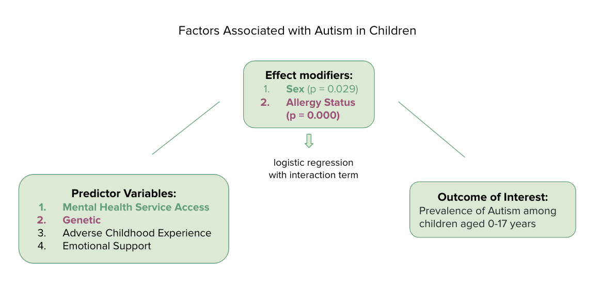

library(tidyverse)
library(knitr)
library(ggpubr)
library(ggrepel)
library(tidyverse)
library(kableExtra)
library(survey)
library(broom)
library(plotrix)
library(haven)
library(dplyr)
library(viridis)
library(hrbrthemes)
library(gridExtra)
library(grid)
library(ggplot2)
library(cowplot)
library(hrbrthemes)
library(ggpubr)Example Analysis
Introduction
Question of Interest
Autism Spectrum Disorder (ASD) is a developmental disability in the human brain. Some people with ASD have a known cause, such as genetics, others cause still remain unknown. ASD begins before the age of 3 and would last throughout one’s life. According to CDC, 1 of 44 children has autism. Children with ASD may have difficulties developing and maintaining friendships, communicating with peers and adults, or understanding what behaviors are expected in school or on the job as they grow up (Control and Prevention 2022). In this report, we are interested to look at some potential factors that are associated with autism in children (0-17years).
Intended Audience
Epidemiologists, neuroscientists, researchers, physicians, families of ASD children, or anyone who is interested in ASD.
Data
We used the 2019-2020 combined NSCH (National Survey of Children’s Health) from DRC (Data Resource Center) of CAHMI (Child and Adolescent Health Measurement Initiative) of Bloomberg School of Public Health to explore some variables that are potentially associated with autism. There were originally 800+ variables/survey questions in the dataset. We cleaned the dataset according to the literature review and our interest in 45 variables, and the total sample size is 72,210. Link to the dataset: https://www.childhealthdata.org/learn-about-the-nsch/NSCH Link to data dictionary: https://www.census.gov/data-tools/demo/uccb/nschdict
Note
Note that although the total sample size of NSCH is 72,210, we took the samples with ASD, which results in a total sample size of 2136.
Directed Acyclic Graph

Variables of interest
- Outcome variable: Autism
- Primary predictor variable: Mental Health Service Access, Genetic, Adverse Childhood Experience, Emotional Support
- Effect modifiers: Sex, Allergy
Analysis Plan
We will be performing logistic regression analysis to test the variables that are associated with autism. We will also conduct logistic regression with interaction terms to test potential effect modifiers.
data <- read.csv(file = "2019-2020 NSCH_Topical_CAHMI_DRC_cleaned.csv",na = c("99","95"))
data_recode <-
data %>%
select(total_kids = TOTKIDS_R,
age = SC_AGE_YEARS,
sex = SC_SEX,
autism = K2Q35A,
mom_age = MOMAGE,
needed_MHS_not_received = K4Q28X04,
first_told_age = K2Q35A_1_YEARS,
needed_health_care_not_received = K4Q27,
insurance_coverage = CURRCOV,
emotional_support = K8Q35,
race = raceASIA_1920,
bullied = bullied_1920,
ACE2more = ACE2more_1920,
parent1age = A1_AGE,
parent2age = A2_AGE,
allergy = ALLERGIES,
genetic = GENETIC,
poverty_level = povlev4_1920,
adult_education = AdultEduc_1920,
Nsidewalk = K10Q11,
Nplayground = K10Q12,
mom_age_birth = MOMAGE
)
data_recode <-
data_recode %>%
mutate(sex = factor(sex, levels=c(1,2),
labels=c('Male','Female')),
autism = factor(autism, levels=c(2,1),
labels=c('No','Yes')),
needed_MHS_not_received = factor(needed_MHS_not_received, levels=c(2,1),
labels=c('No','Yes')),
needed_health_care_not_received = factor(needed_health_care_not_received, levels=c(2,1),
labels=c('No','Yes')),
insurance_coverage = factor(insurance_coverage, levels=c(2,1),
labels=c('No','Yes')),
emotional_support = factor(emotional_support, levels=c(2,1),
labels=c('No','Yes')),
race = factor(race, levels=c(1,2,3,4,5),
label=c('Hispanic','White non-Hispanic', 'Black non-Hispanic', 'Asian non-Hipanic', 'Other/Multiracial non-Hispanic')),
genetic = factor(genetic, level=c(2,1),
label=c('No','Yes')),
allergy = factor(allergy,level=c(2,1),
label=c('No', 'Yes')),
ACE2more = factor(ACE2more, level=c(1,2,3),
label=c("No ACE", "1 ACE", "2 or more ACE")),
poverty_level = factor(poverty_level, level=c(4,3,2,1),
label=c("400% FPL or greater","200%-399% FPL","100%-199% FPL", "0%-99% FPL")),
adult_education = factor(adult_education, level=c(1,2,3,4),
label=c("Less than High School", "High School or GED", "Some College or Technical School", "College Degree or higher")),
Nsidewalk = factor(Nsidewalk, level=c(2,1),
label=c('No', 'Yes')),
Nplayground = factor(Nplayground, level=c(2,1),
label=c('No','Yes')),
)
agegroup <-cut(data_recode$age, c(-1,3,6,10,14,17),
labels=c("0-3 years","3-6 years", "7-10 years","11–14 years","15-17 years"))
data_recode <-
data_recode %>%
mutate(agegroup)Data Display on Demographics
Race
We are first presenting some data displays on some of the demographic variables in the dataset.
#race table
my_table3 <- data_recode %>%
count(race, autism) %>%
group_by(race) %>%
mutate(percent =round(n/sum(n)*100,1)) %>%
filter(autism == "Yes")
main.title <- "Prevalence of Autism Across Race"
tbody.style = tbody_style(color = "black", fill = c("#e8f3de", "#d3e8bb"), hjust=1, x=0.9)
table <- ggtexttable(my_table3, rows = NULL,theme = ttheme(colnames.style = colnames_style(color = "white", fill = "#8cc257"),tbody.style = tbody.style))
table %>%
tab_add_title(text = main.title)
The first demographic variable we look at is race. Race is a nominal variable with 5 different categories: Hispanic, White non-Hispanic, Black non-Hispanic, Asian non-Hispanic, and Other/Multiracial non-Hispanic. This table above shows the prevalence of autism within different racial subgroups. The data shows that the prevalence of autism does not vary much by race. All races show about around 3% of prevalence of autism, besides Asian subgroup, which is slightly lower (2.2%).
Sex
my_table7 <- data_recode %>%
count(sex, autism) %>%
group_by(sex) %>%
mutate(percent =round(n/sum(n)*100,1))
p7 <- my_table7 %>%
filter(autism == "Yes") %>%
ggplot() +
geom_bar(aes(x = sex, y = percent, fill = autism),stat = "identity", position = "dodge") +
ggtitle('Sex') +
ylab('proportion') +
#theme(axis.text.x = element_text(angle = 90)) +
scale_fill_manual("autism", values = c("Yes" = "mistyrose2")) +
theme(panel.background = element_blank()) +
theme(axis.line = element_line(colour = "grey")) +
labs(y = "Prevalence rate of Autism (%)", x = "Sex", title = "Prevalence of Autism", subtitle = "with regard to children's sex", caption = "Data source: 2019-2020 combined NSCH") +
geom_text(aes(x = sex, y = percent, label = percent), size = 2.5, vjust = 1.8, color = "lightsteelblue4")
p7
The second demographic variable we look at is sex. Sex is a nominal variable with two categories: male and female. Male has a three times higher prevalence of cancer (4.5%) comparing to female (1.3%).Thus, we are going to further investigate this variable.
Children’s Age
#age
my_table8 <- data_recode %>%
count(age, autism) %>%
group_by(age) %>%
mutate(percent =round(n/sum(n)*100,1)) %>%
filter(autism == "Yes")
p8 <- my_table8 %>%
ggplot(aes(x= age, y= percent)) +
geom_segment( aes(x=age, xend=age, y=0, yend=percent), color = "darkseagreen4") +
geom_point( size=5, color="darkseagreen3", fill=alpha("darkseagreen2", 0.3), alpha=0.7, shape=21, stroke=2)+
theme(panel.background = element_blank()) +
theme(axis.line = element_line(colour = "grey")) +
labs(y = "Prevalence rate of Autism (%)", x = "Age", title = "Prevalence of Autism", subtitle = "with regard to children's age", caption = "Data source: 2019-2020 combined NSCH") +
geom_text(aes(x = age, y = percent, label = percent), size = 2.5, vjust = -1.8, colour = "lightsteelblue4") +
ylim(0,4.5)
p8
The third variable we look at the children’s age when diagnosed with autism. Age is an ordinal variable with categorized from 1 to 17 years. The graph above shows that start from 6 years old, the prevalence of autism rises to 3%.
Parents’ Age
p4 <- data_recode %>%
select(autism, parent1age) %>%
drop_na() %>%
ggplot(aes(x = autism, y = parent1age)) +
geom_violin(trim = FALSE, fill = "linen", color = "lightskyblue3") +
labs(title = "Prevalence of Autism", subtitle = "with regard to parent1's age", x = "Autism", y = "Age of Parent 1", caption = "Data source: 2019-2020 combined NSCH") +
theme(panel.background = element_blank()) +
theme(axis.line = element_line(colour = "grey")) +
geom_boxplot(width=0.05, color = "lightskyblue3")
p5 <- data_recode %>%
select(autism, parent2age) %>%
drop_na() %>%
ggplot(aes(x = autism, y = parent2age)) +
geom_violin(trim = FALSE, fill = "linen", color = "lightskyblue3") +
labs(title = "Prevalence of Autism", subtitle = "with regard to parent2's age", x = "Autism", y = "Age of parent 2",caption = "Data source: 2019-2020 combined NSCH") +
theme(panel.background = element_blank()) +
theme(axis.line = element_line(colour = "grey")) +
geom_boxplot(width=0.05, color = "lightskyblue4")
ggarrange(p4, p5, ncol=2, nrow=1)
During previous literature review, we found out that parents’ age are associated with their children developing autism. Thus, the above graph looks at both parents’ age at the time the survey was taken. However, from our data, we don’t see a strong parents’ age differences between children with autism and without autism.
Parents’ education
my_table9 <- data_recode %>%
count(adult_education, autism) %>%
group_by(adult_education) %>%
mutate(percent =round(n/sum(n)*100,1))
p9 <- my_table9 %>%
filter(autism == "Yes") %>%
ggplot() +
geom_bar(aes(x = adult_education, y = percent, fill = autism),stat = "identity", position = "dodge") +
ggtitle("Adults' Education") +
ylab('proportion') +
#theme(axis.text.x = element_text(angle = 90)) +
scale_fill_manual("autism", values = c("Yes" = "peachpuff2")) +
theme(panel.background = element_blank()) +
theme(axis.line = element_line(colour = "grey")) +
theme(axis.text.x = element_text(size = 6)) +
labs(y = "Prevalence rate of Autism (%)", x = "Adult's education", title = "Prevalence of Autism", subtitle = "with regard to Adult's highest education level", caption = "Data source: 2019-2020 combined NSCH") +
geom_text(aes(x = adult_education, y = percent, label = percent), size = 2.5, vjust = 1.8, color = "lightsteelblue4")
p9
For adult’s education variable, it is collected as the highest education of the household. The above graph shows no significant trend or relationship between the highest education level of parents and the prevalence of autism in their children.
Household Income
my_table10 <- data_recode %>%
count(poverty_level, autism) %>%
group_by(poverty_level) %>%
mutate(percent =round(n/sum(n)*100,1))
p10 <- my_table10 %>%
filter(autism == "Yes") %>%
ggplot(aes(x = poverty_level, y = percent, group = 1)) +
geom_line(color = "grey") +
geom_point(shape = 21, color = "lightsteelblue4", fill="snow2", size=6) +
ggtitle("Adults' Education") +
ylab('proportion') +
theme(panel.background = element_blank()) +
theme(axis.line = element_line(colour = "grey")) +
labs(y = "Prevalence rate of Autism (%)", x = "Household Poverty Level", title = "Prevalence of Autism", subtitle = "with regard to household poverty level", caption = "Data source: 2019-2020 combined NSCH") +
geom_text(aes(x = poverty_level, y = percent, label = percent), size = 2.5, color = "lightsteelblue4")
p10
Household poverty level is an ordinal variable with four categories: “400% federal poverty level or greater”, “200%-399% federal poverty level”, “100%-199% federal poverty level”, “0%-99% federal poverty level”. From the above graph, we can see that as household income decreases, the prevalence of autism of the children increases.
More Data Displays
Mental Health Service Access and Sex
my_table1 <- data_recode %>%
count(sex, needed_MHS_not_received, autism) %>%
group_by(sex, needed_MHS_not_received) %>%
mutate(percent =round(n/sum(n)*100,1))
p1 <- my_table1 %>%
filter(autism == "Yes") %>%
drop_na() %>%
ggplot() +
geom_bar(mapping = aes(x = needed_MHS_not_received, y = percent, fill = autism), show.legend = FALSE, stat = "identity") +
facet_wrap(~sex) +
scale_fill_manual("autism", values = c("Yes" = "thistle")) +
labs(y= "Proportion of Autism (%)",
x= "Needed Mental Health Service but not Received",
title= "Risk of Autism",
subtitle = "Comparing Mental Healthcare access Across Sex",
fill = "Autism Status",
caption = "Data source: 2019-2020 combined NSCH") +
geom_text(aes(x = needed_MHS_not_received, y = percent, label = percent), size = 2.5) +
theme(panel.background = element_blank()) +
theme(axis.line = element_line(colour = "grey"))
p1
We now look at one of our predictor variables - Mental healthcare access status across sex. The above graph shows that for both sex, there is a significant higher prevalence of autism when children needed mental healthcare service but did not receive. However, for male, the overall prevalence is much higher than the prevlence in female. We propose sex to be a potential effect modifier in the association between mental healthcare access status and prevalence of autism among children.
Genetic and Allergy
my_table6 <- data_recode %>%
count(genetic, allergy, autism) %>%
group_by(genetic, allergy) %>%
mutate(percent =round(n/sum(n)*100,1))
p6 <- my_table6 %>%
drop_na() %>%
filter(autism == "Yes") %>%
ggplot() +
geom_bar(mapping = aes(x = genetic, y = percent, fill = autism), show.legend = FALSE, stat = "identity") +
facet_wrap(~allergy) +
scale_fill_manual("genetic", values = c("Yes" = "pink")) +
labs(y= "Proportion of Autism (%)",
x= "Genetic Disease Status",
title= "Risk of Autism",
subtitle= "Comparing Genetic Status Across Allergy Status",
caption = "Data source: 2019-2020 combined NSCH",
fill = "Autism Status") +
geom_text(aes(x = genetic, y = percent, label = percent), size = 2.5) +
theme(panel.background = element_blank()) +
theme(axis.line = element_line(colour = "grey"))
p6
The above graph looks at another predictor variable that we are interested in- genetic status across allergy status. We don’t see much differences across allergy status. However, for children with genetic disease, the prevalence of autism is much higher than those without genetic disease. This is also shown in current literature (Chua et al. 2021; Nemet et al. 2022).
Statistical Analysis
Logistic Regression Analysis
In the next section, we are performing logistic regression analysis with all of our variables of interest to see potential statistical significance relationship between the variables of interest and our outcome variable.
#logistic regression
model1 <- glm(autism ~ needed_MHS_not_received + sex + age + insurance_coverage + emotional_support+ bullied+ ACE2more + genetic + allergy + race + Nsidewalk + Nplayground + parent1age + parent2age + mom_age_birth + poverty_level + adult_education, family=binomial(link="logit"), data=data_recode)
model1_tidy <-
tidy(model1, exponentiate = TRUE, conf.int = TRUE, conf.level = 0.95)
model1_tidy %>%
#tidy(exponentiate = TRUE, conf.int = TRUE, conf.level = 0.95) %>%
filter(term != "(Intercept)") %>%
mutate(conf.int = paste0("(", round(conf.low,3), ", ", round(conf.high,3), ")"),
p.value = format(round(p.value, 3), nsmall = 3),
estimate = format(round(estimate, 3), nsmall = 3)) %>%
select(Term = term, OR = estimate,`p-value` = p.value, `95% CI` = conf.int) %>%
filter(`p-value` <= 0.05) %>%
mutate(Term = c("Needed Mental Health Service not Received", "Female", "Insurance covered", "Genetic Disease","Adult education: High school or GED", "Adult education: Some College or Technical School")) %>%
kable(digits = 3, format = "markdown", caption = "Logistic Regression Analysis")| Term | OR | p-value | 95% CI |
|---|---|---|---|
| Needed Mental Health Service not Received | 2.027 | 0.000 | (1.43, 2.877) |
| Female | 0.227 | 0.000 | (0.151, 0.331) |
| Insurance covered | 2.386 | 0.014 | (1.251, 5.049) |
| Genetic Disease | 2.801 | 0.000 | (1.828, 4.246) |
| Adult education: High school or GED | 8.037 | 0.048 | (1.536, 148.513) |
| Adult education: Some College or Technical School | 7.956 | 0.047 | (1.576, 145.46) |
Note: \[ Odds= \frac {case}{1-case} \]
For the logistic regression, we included all of the variables that we are interested in. Holding all other variables constant, children not receiving mental health service access while needed is associated with 102.7% increase in the odds of autism (p-value 7.31e-05, 95% CI 43-187.7%) comparing to children who received mental health service while needed.
Holding all other variables constant, female children is associated with -77.3% increase in the odds of autism (p-value 9.82e-14, 95% CI -84.9–66.9%) comparing to male children.
Holding all other variables constant, having insurance coverage is associated with 138.6% increase in the odds of autism (p-value 0.0136, 95% CI 25.1-404.9%) comparing to children without insurance coverage.
Holding all other variables constant, having genetic disease is associated with 180.1% increase in the odds of autism (p-value 1.58e-06, 95% CI 82.8-324.6%) comparing to children without having genetic disease.
Although adult education: high school or GED and adult education: some college or technical school also showed statistical significant result, both confidence intervals are very wide, suggesting that the sample does not provide a precise representation of the population mean.
Logistic Regression with Sex as an Interaction Term
#association between mental health access and autism, sex as an interaction
model4 <- glm(autism ~ needed_MHS_not_received*sex +genetic + age + insurance_coverage + emotional_support+ bullied+ ACE2more + allergy, family = binomial(link="logit"), data=data_recode)
model4 %>%
tidy(exponentiate = TRUE, conf.int = TRUE, conf.level = 0.95) %>%
filter(term != "(Intercept)") %>%
mutate(conf.int = paste0("(", round(conf.low,3), ", ", round(conf.high,3), ")"),
p.value = format(round(p.value, 3), nsmall = 3),
estimate = format(round(estimate, 3), nsmall = 3)) %>%
select(Term = term, OR = estimate,`p-value` = p.value, `95% CI` = conf.int) %>%
filter(Term == ("needed_MHS_not_receivedYes:sexFemale")) %>%
mutate(Term = c("Needed MHS but not received~Female")) %>%
kable(digits = 3, format = "markdown", caption = "Logistic Regression with Interaction Term")| Term | OR | p-value | 95% CI |
|---|---|---|---|
| Needed MHS but not received~Female | 2.155 | 0.029 | (1.091, 4.374) |
In the above logistic regression with interaction model, holding all else constant, the odd ratio (OR = 2.155) of the interaction term is statistically significant that falls in the 95% confidence interval (1.091, 4.374), with a p-value < 0.05. Thus, we reject the null hypothesis and sex has a modification effect on mental healthcare access status and prevalence of autism in children.
Logistic Regression with Allergy as an Interaction Term
Important
This result is interesting and leads to my thesis: looking at the genetic variants (SNPs) in mast cell activation pathway and its association with ASD outcome in children (Theoharides, n.d.).
#association between genetic and autism, where allergy is a effect modification
model2 <- glm(autism ~ genetic*allergy+ age + insurance_coverage + emotional_support+ bullied+ ACE2more + allergy + sex, family = binomial(link="logit"), data=data_recode)
model2 %>%
tidy(exponentiate = TRUE, conf.int = TRUE, conf.level = 0.95) %>%
filter(term != "(Intercept)") %>%
mutate(conf.int = paste0("(", round(conf.low,3), ", ", round(conf.high,3), ")"),
p.value = format(round(p.value, 3), nsmall = 3),
estimate = format(round(estimate, 3), nsmall = 3)) %>%
select(Term = term, OR = estimate,`p-value` = p.value, `95% CI` = conf.int) %>%
filter(Term == ("geneticYes:allergyYes")) %>%
mutate(Term = c("Genetic Disease~Allergy")) %>%
kable(digits = 3, format = "markdown", caption = "Logistic Regression with Interaction Term")| Term | OR | p-value | 95% CI |
|---|---|---|---|
| Genetic Disease~Allergy | 0.666 | 0.000 | (0.531, 0.835) |
In the above logistic regression with interaction model, holding all else constant, the odd ratio (OR = 0.666) of the interaction term is statistically significant that falls in the 95% confidence interval (0.531, 0.835), with a p-value < 0.05. Thus, we reject the null hypothesis and allergy has a modification effect on genetic disease status and prevalence of autism in children.
Conclusion
The question we are interested in is what are some factors that are associated with autism in children aged 0-17 years. In this report, we first looked at data displays of some demographic variables. We found out that sex and household income level showed specific trends that we might want to further discover. Then, we looked at data displays of our predictor variables and outcome variables. Last, we conducted logistic regressions with all of the variables and found out that mental health service access, sex, insurance status, and genetics are the four variables that showed statistically significant results. We further performed two logistic regressions with interaction terms. The results showed that sex is an effect modifier of the association between mental health service access and prevalence of autism, and allergy is an effect modifier of the association between genetic disease status and prevalence of autism.
Packages and Functions
From the dplyr package, I used:
- group_by()
- mutate()
- filter()
- select()
- count()
- drop_na()
From the ggplot2 package, I used:
- geom_bar()
- geom_text()
- geom_line()
- geom_point()
- goem_violin()
- geom_segment()
- geom_boxplot()
References
Chua, Regena Xin Yi, Michelle Jia Yu Tay, Delicia Shu Qin Ooi, Kewin Tien Ho Siah, Elizabeth Huiwen Tham, Lynette Pei-Chi Shek, Michael J. Meaney, Birit F. P. Broekman, and Evelyn Xiu Ling Loo. 2021. “Understanding the Link Between Allergy and Neurodevelopmental Disorders: A Current Review of Factors and Mechanisms.” Frontiers in Neurology 11 (February): 603571. https://doi.org/10.3389/fneur.2020.603571.
Control, Centers for Disease, and Prevention. 2022. “Signs and Symptoms of Autism Spectrum Disorder.” https://www.cdc.gov/ncbddd/autism/signs.html#:~:text=Autism%20spectrum%20disorder%20(ASD)%20is,%2C%20moving%2C%20or%20paying%20attention.
Nemet, Shay, Ilan Asher, Israel Yoles, Tuvia Baevsky, and Zev Sthoeger. 2022. “Early Childhood Allergy Linked with Development of Attention Deficit Hyperactivity Disorder and Autism Spectrum Disorder.” Pediatric Allergy and Immunology 33 (6). https://doi.org/10.1111/pai.13819.
Theoharides, Theoharis. n.d. “Mast Cells and Autism.” https://tacanow.org/family-resources/mast-cells-and-autism/#:~:text=Many%20epidemiological%20studies%20have%20shown,improvements%20in%20core%20autism%20symptoms.